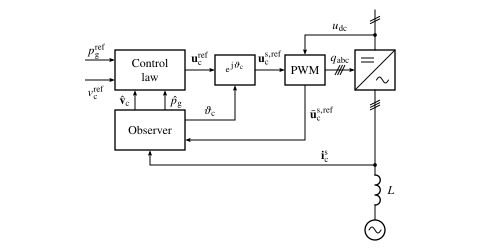

Disturbance-Observer-Based Grid-Forming Control#
In these notes, disturbance-observer-based grid-forming control is discussed [Nurminen et al., 2024]. This control method is available in the motulator.grid.control.ObserverBasedGridFormingController class. As can be realized by comparing examples 12.5-kVA, RFPSC-GFM and 12.5-kVA, DO-GFM, the observer-based grid-forming control can be configured to behave practically identically with reference-feedforward power-synchronization control (PSC) [Harnefors et al., 2020]. Compared to reference-feedforward PSC, disturbance-observer-based grid-forming control is easier to analyze and extend with different operating modes (including grid-following and transparent current-control modes). The order of these two control methods is the same and their computational complexity is comparable.
System Model#
First, the system is modeled in general coordinates, whose angle with respect to the stationary coordinates is \(\thetac\) and the angular speed is \(\omegac = \D\thetac/\D t\). The dynamics of the inductor current \(\ic\) and the grid voltage \(\ug\) are modeled as
where \(L\) is the inductance and \(\omegag\) is the grid angular frequency. The grid voltage \(\ug\) is modeled as a disturbance; this same disturbance model for the grid voltage is also used in the development of Phase-Locked Loop. The active power fed to the grid is nonlinear in the state variables
For the purpose of grid-forming control, we may define the quasi-static converter voltage as an output variable as a function of the state variables,
This voltage is controllable (unlike the grid voltage which is the disturbance) and it equals the converter output voltage \(\uc\) in the steady state. The disturbance-observer-based PSC regulates the voltage magnitude \(|\vc|\) and the power \(p_\mathrm{g}\) fed to grid.
Control System#
The control system consists of a disturbance observer and a control law, see Figure 1. The disturbance observer estimates the quasi-static converter voltage and the power fed to the grid. The control law generates the converter voltage reference based on the estimated grid voltage and power. The disturbance observer also provides the integral action for the control law. This control structure allows seamless switching between grid-forming and grid-following modes [Nurminen et al., 2024]. For simplicity, only the grid-forming mode is considered in the following.


Figure 1: Disturbance-observer-based grid-forming control. The observer transforms the measured converter current \(\ics\) into the controller coordinates, rotating at the nominal grid angular frequency, and estimates the quasi-static converter voltage \(\hatvc\) and the power \(\hatpg\). The observer uses the realized voltage obtained from the PWM, taking into account the voltage limitation and the computational delay. The control law also uses the converter current for the transparent current limitation.#
Figure 1: Disturbance-observer-based grid-forming control. The observer transforms the measured converter current \(\ics\) into the controller coordinates, rotating at the nominal grid angular frequency, and estimates the quasi-static converter voltage \(\hatvc\) and the power \(\hatpg\). The observer uses the realized voltage obtained from the PWM, taking into account the voltage limitation and the computational delay. The control law also uses the converter current for the transparent current limitation.#
Disturbance Observer#
Based on (1)–(3), a disturbance observer for the grid voltage can be formed [Franklin et al., 1997, Kukkola et al., 2021, Nurminen et al., 2024]
where \(\hatomegag\) is the nominal grid angular frequency and estimates are marked with hat.
Note
A conventional phase-locked loop (PLL) can be expressed in the same disturbance observer framework, see the Phase-Locked Loop notes. It can be realized that the measured grid voltage \(\ug\) used in the conventional PLL is replaced by its converter-voltage-based estimate \(\uc - \hat L (\D \ic/\D t) - \jj \omegac \hat L \ic\) in the disturbance observer (4).
Control Law#
A nonlinear state feedback law is used
where \(\pgref\) is the active power reference, \(\vcref\) is the converter voltage magnitude reference, and \(\hatabsvc = |\hatvc|\) is the magnitude. The complex gains for the active-power and converter-voltage-magnitude channels, respectively, are selected as
where the gains \(R_\mathrm{a} = 0.25u_\mathrm{nom}/i_\mathrm{max}\) and \(k_\mathrm{v} = \alphao/\omegag\) can be used. Here, \(u_\mathrm{nom}\) is the nominal grid voltage (line-to-neutral peak value) and \(i_\mathrm{max}\) is the maximum converter current (peak value).
Implementation Aspects#
The coordinate system for the implementation can be chosen freely. The simplest choice is to use the nominal grid frequency as the coordinate system frequency, \(\omegac = \hatomegag\). The disturbance observer is implemented in discrete time, using the hold-equivalent model of (1) in these coordinates. Over the sampling period, the coordinates rotate at the constant angular speed \(\hatomegag\), the realized converter voltage is constant in stationary coordinates, and the grid voltage is constant in the observer coordinates, which gives
where \(\uc(k)\) is the realized voltage averaged over the sampling period from \(k\) to \(k + 1\) and
All vectors are in the observer coordinates at the instant \(k\). At each sampling instant, the grid-voltage estimate is corrected using the prediction error of the current, after which the current is predicted for the next sampling instant,
where the gain \(k_\mathrm{o} = (1 - \e^{-\alphao\Ts})/\gamma_\mathrm{g}\) places the pole of the estimation-error dynamics at \(\e^{-\alphao\Ts}\), corresponding to the pole \(-\alphao\) of (4). The estimates \(\hatvc\) and \(\hatpg\) are obtained from (4), and the control law (5) is used as such. Various control modes could be easily incorporated into the control system, simply by changing the feedback correction terms of the control law [Nurminen et al., 2024]. The switching between the modes is seamless since the control law does not have memory, but the integral action is provided by the disturbance observer (in addition to synchronization).
The control system implemented in the motulator.grid.control.ObserverBasedGridFormingController class consists of the disturbance observer (9) and the control law (5). In the example implementation, a transparent current-control mode is implemented. The implementation also includes an optional series-resistance estimate \(\hat R\) (zero by default), which adds the voltage drop \(\hat R\ic(k)\) to the grid-voltage estimate in the current prediction and the term \(\hat R\ic\) to the control law. In the grid-forming mode, the observer bandwidth \(\alphao = 1\) p.u. can be used. Furthermore, the inductance estimate can be set close to the lowest expected inductance value, e.g., \(\hat L = 0.15\) p.u. Using this configuration, the robust performance from strong grids to very weak grids can be achieved. This grid-forming control method can also be used with LCL filters, similarly to reference-feedforward PSC.
Active-Power Reference Limitation#
The transparent current controller limits the converter current, but it does not guarantee that the active-power reference is realizable. For example, during a grid-voltage sag in a weak grid, the power that can be transferred to the grid may drop below the reference. Then, no equilibrium exists and the converter loses synchronism. To avoid this, the active-power reference can be limited to a realizable level, prioritizing the reactive current [Määttä et al., 2026]. In balanced conditions, the maximum allowable active power is
where \(i_\mathrm{d,max}\) is the maximum active current and \(\alpha_\mathrm{l}\) is the power-limitation bandwidth. The limited active-power reference is \(\bar p_\mathrm{g}^\mathrm{ref} = \mathrm{sign}(\pgref) \min(|\pgref|, p_\mathrm{max})\). The maximum active current should be chosen somewhat below the current limit \(i_\mathrm{max}\), e.g., \(i_\mathrm{d,max} = 1.1\) p.u. when \(i_\mathrm{max} = 1.3\) p.u. [Määttä et al., 2026]. This limitation is enabled in the motulator.grid.control.ObserverBasedGridFormingController class by setting the parameter i_d_max. Its effect is demonstrated in the example 12.5-kVA, DO-GFM, grid-voltage sag.
Dual-Voltage-Forming Control#
The disturbance-observer-based control can be extended to regulate the DC-bus voltage directly, without a cascaded DC-bus voltage controller [Mourouvin et al., 2025]. In addition to the quasi-static converter voltage \(\hatvc\), the disturbance power \(p_\mathrm{dis} = p_\mathrm{ext} - \pg - (3/2)R|\ic|^2\) is estimated, where \(p_\mathrm{ext}\) is the external power fed to the DC bus and the last term is the resistive losses (omitted in [Mourouvin et al., 2025]). The estimate is obtained from the energy balance of the DC-bus capacitor and the inductor,
where \(x\) is an auxiliary state, \(\alpha_\mathrm{o,dc}\) is the observer bandwidth, \(\hatWdc = \hatCdc\udc^2/2\) is the DC-bus energy, and \(\boldsymbol{e}_\mathrm{c} = \uc - \hatvc\) is the realized feedback correction, computed from the realized converter voltage \(\uc\) of the ongoing sampling period (averaged over the period in the observer coordinates). The feedback correction in the dual-voltage-forming mode is
where the complex gains \(\boldsymbol{k}_\mathrm{d} = k_\mathrm{d}\hatvc/\hat v_\mathrm{c}\), \(\boldsymbol{k}_\mathrm{w} = k_\mathrm{w}\hatvc/\hat v_\mathrm{c}\), and \(\boldsymbol{k}_\mathrm{v} = (1 - \mathrm{j}k_\mathrm{v})\hatvc/\hat v_\mathrm{c}\) are aligned with the quasi-static converter voltage. The approximate closed-loop bandwidth of the DC-bus energy is \(\alpha_\mathrm{dc} = k_\mathrm{w}/k_\mathrm{d}\), and the DC-bus power gain \(k_\mathrm{d} = 1\) p.u. can be used. The control law (12) equals the grid-forming mode with the power control gain \(R_\mathrm{a}/(3 v_\mathrm{c}^\mathrm{ref}/2) = k_\mathrm{d}\) and the active-power reference \(\pgref = \hat p_\mathrm{dis} + \hatpg - \alpha_\mathrm{dc}(\Wdcref - \hatWdc)\), where \(\hat p_\mathrm{dis} + \hatpg\) is the estimated external power excluding the resistive losses: the disturbance observer provides the feedforward of the external power and the integral action. Since the active power is not controlled in a cascade, the DC-bus voltage control does not depend on the power-control dynamics, which vary with the grid strength. This method is implemented in the motulator.grid.control.DualVoltageFormingController class and demonstrated in 2.2-kW IPMSM, dual-voltage-forming AFE, CVC, where the external power is fed by a motor drive.